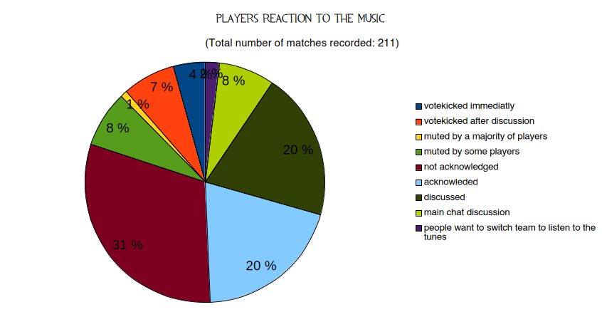

Hi ! If you're reading this, you've probably been on my team in a Team Fortress 2 match, and experienced me playing music through my mic. Hopefully, it was something you liked.
I started playing TF2 in September 2023, right in the middle of the bot crisis, and although finding good casual servers was not as easy as today (i didnt know community servers were a thing), i still fell in love with the game.
So imagine how happy i was, when for the summer 2024 update, Valve finally did something and banned a majority of bots and bot hosters. I was simply overjoyed to be able to play the game i loved to it's fullest potential.
In that update, one the maps packaged with it, was koth_megaton. And although it wasnt the greatest map gameplay-wise, i just loved playing on it, for the summer and beach vibes and the nuclear finale at the end of every round.
So for some unkown reason, i started playing some music through my mic using SounDux, an third party app compatible with my system, Ubuntu. Some screenshots and videos of this summer can be found here,here, here and here.
I was just having so much fun having beach parties with the people that loved this games as much as i did, and the map creators even added a beach ball and a little radio by the shore after seing me play the map.
But sadly at the end of the summer, a major update on Ubuntu completly broke SounDux, wich wasnt working anymore, and Soundux was an abandonware, so there was no easy way to play music anymore.
At first i tried figuring out a solution, like creating a virtual mic sink, redirecting a VLC output into the sink and then having TF2 monitor the sink to get the music in TF2, but it just didnt work.
A year and a half later, i'm still playing tf2, and i remember just how fun it was to play music for everyone, and after more time and more wrinkles added to my brain (and the help of ChatGPT and it's infinite patience and access to documentation), i discovered that TF2, due to what is probably some refined source spaguetti, actually always defaults to what your computer defines as the 'default mic', or at least on Linux.
So after a bit of work, i wrote scripts that allowed me to create a virtual mic and define it as the default, and delete that mic and reset the default. And voila, i had effectively made my own way to micspam in tf2 (can you tell i'm proud of myself for this one)
I also decided i would track what was the player reaction to the mic spam, as i think it would be interesting to have real data on the subject. I also demo-record all of my matches and will share the most interesting ones.
Personnaly observed player reactions to micspam stats (started 27/01/2026, Last updated 18/09/2025).
20/06/2025 Observation note:
Interesting phenomena: I have observed that when freshly autobalanced after a, so far, good match with great cohesion with a team, the new team tends to immediatly votekick me. How strange.
27/06/2025 Observation note:
While still being moderately good, i have noticed an increase in the chances of being healed and pocketed my medics.
12/08/2025:
After 2 months and about 200 matches, i consider the sample size to be large enough to start making abservations based on the results. I will spend less time actually in game, and begin work on a script for a video about the results.
18/09/2025:
I havent written a single line in the script yet, and i've missed playing the game, so i'm gonna start playing regularly again.
16/07/25 (incredible people on well):
⬇️ Download19/07/25 (that's just bullying):
⬇️ Download20/07/25 (nice trimps and crazy people):
⬇️ Download22/07/25 (demonstration of a pocket medic):
⬇️ Download22/07/25 (fun but disgusting):
⬇️ Download24/07/25 (dustbowl furries):
⬇️ Download27/07/25 (cashworks ? i sure hope it does):
⬇️ Download26/07/25 (first, last, and only good Citadel match i've ever had):
⬇️ Download26/07/25 (really good Conifer game):
⬇️ Download31/07/25 (Dustbowl DETERMINATION):
⬇️ Download05/08/25 (first time i leave a match because i just dont want to play with those people):
⬇️ Download06/08/25 (demonstation of counter spamming):
⬇️ Download06/08/25 (actually balanced upward match):
⬇️ Download07/08/25 (votekicked after discussion demonstration):
⬇️ Download18/09/25 (cool turbine game):
⬇️ DownloadSteam profile picture done by Tater Art.